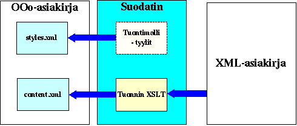
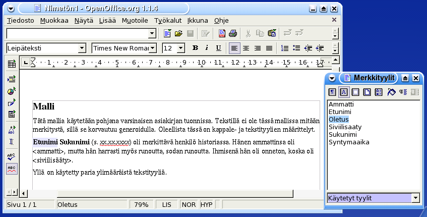
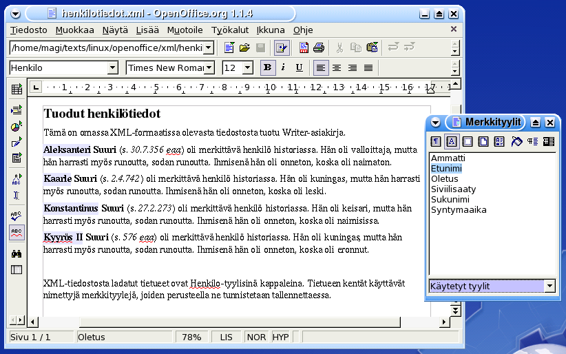

XML-asiakirjat » Tuontisuodattimet
Tuontisuodattimen tekeminen
OpenOffice.orgiin on mahdollista itse rakentaa tuontisuodattimia
XSLT-kielellä. Tuontisuodattimet voidaan asentaa OpenOffice.orgiin helposti tai
niitä voidaan käyttää ulkoisissa ohjelmissa.

Tuontisuodatin koostuu seuraavista komponenteista:
- XSLT-muunnin, joka luo asiakirjan content.xml-tiedoston,
- tuontimalli, joka määrittelee asiakirjan tyylit, ja lisäksi
- valinnainen DTD-rakennemäärittely.
XML-asiakirja
Käytämme esimerkkinä seuraavaa XML-muodossa olevaa henkilötietokantaa.
<?xml version="1.0" encoding="UTF-8"?>
<henkilot>
<henkilo>
<etunimi>Aleksanteri</etunimi>
<sukunimi>Suuri</sukunimi>
<syntymaaika>30.7.356 eaa</syntymaaika>
<ammatti>valloittaja</ammatti>
<siviilisaaty tyyppi="naimaton"/>
</henkilo>
<henkilo>
<etunimi>Kaarle</etunimi>
<sukunimi>Suuri</sukunimi>
<syntymaaika>2.4.742</syntymaaika>
<ammatti>kuningas</ammatti>
<siviilisaaty tyyppi="leski"/>
</henkilo>
<henkilo>
<etunimi>Konstantinus</etunimi>
<sukunimi>Suuri</sukunimi>
<syntymaaika>27.2.273</syntymaaika>
<ammatti>keisari</ammatti>
<siviilisaaty tyyppi="naimisissa"/>
</henkilo>
<henkilo>
<etunimi>Kyyrös II</etunimi>
<sukunimi>Suuri</sukunimi>
<syntymaaika>576 eaa</syntymaaika>
<ammatti>kuningas</ammatti>
<siviilisaaty tyyppi="eronnut"/>
</henkilo>
</henkilot>
XML-rakennemäärittelyt
XML-asiakirjatyypille on hyvä tehdä DTD-rakennemäärittely
oikeellisuuden tarkistamiseksi. DTD-määrittely ei ole pakollinen ja
sitä käytetään OpenOffice.orgissa lähinnä vientisuodattimissa
oikeellisuuden tarkistamiseen. Tuonnissa sitä voidaan käyttää vain
.xml-päätteisen asiakirjatiedoston tyypin selvittämiseen,
eikä sekään ole pakollista.
Yllä mainitun henkilötietoesimerkin DTD-rakennemäärittely olisi
seuraavanlainen:
<!ELEMENT henkilot (henkilo*)>
<!ELEMENT henkilo (etunimi,sukunimi,syntymaaika,ammatti,siviilisaaty)>
<!ELEMENT etunimi (#PCDATA)>
<!ELEMENT sukunimi (#PCDATA)>
<!ELEMENT syntymaaika (#PCDATA)>
<!ELEMENT ammatti (#PCDATA)>
<!ELEMENT siviilisaaty EMPTY>
<!ATTLIST siviilisaaty tyyppi (naimaton|naimisissa|eronnut|leski) #REQUIRED>
DTD-rakennemäärittelyjä voidaan käyttää esimerkiksi
oikeellisuustarkistuksiin.
Seuraavassa esimerkki käyttäen onsgmls-validaattoria, kun XML-tiedostoon on tehty virhe:
$ onsgmls -wxml -s henkilotiedot.xml
onsgmls:henkilotiedot.xml:29:13:E: element "EETUNIMI" undefined
onsgmls:henkilotiedot.xml:30:13:E: document type does not allow element "SUKUNIMI" here
onsgmls:henkilotiedot.xml:31:16:E: document type does not allow element "SYNTYMAAIKA" here
onsgmls:henkilotiedot.xml:32:12:E: document type does not allow element "AMMATTI" here
onsgmls:henkilotiedot.xml:33:34:E: document type does not allow element "SIVIILISAATY" here
onsgmls:henkilotiedot.xml:34:11:E: end tag for "HENKILO" which is not finished
XML-pohjaiset "skeemat" ovat DTD-määrittelyjä uudempi tapa tehdä
XML-rakennemäärittelyjä, ja mahdollistavat mm. tietotyyppien (kuten
merkkijono tai kokonaisluku) määrittämisen. XML-skeemoja voi tehdä
usealla skeemakielellä, kuten XML Schema tai
RelaxNG. Henkilötietoesimerkkimme XML-asiakirjatyypin
RelaxNG-rakennemäärittely olisi seuraavanlainen:
<?xml version="1.0" encoding="iso-8859-1"?>
<element name="henkilot" xmlns="http://relaxng.org/ns/structure/1.0">
<zeroOrMore>
<element name="henkilo">
<element name="etunimi">
<text/>
</element>
<element name="sukunimi">
<text/>
</element>
<element name="syntymaaika">
<text/>
</element>
<element name="ammatti">
<text/>
</element>
<element name="siviilisaaty">
<attribute name="tyyppi">
<choise>
<value>naimaton</value>
<value>naimisissa</value>
<value>eronnut</value>
<value>leski</value>
</choise>
</attribute>
</element>
</element>
</zeroOrMore>
</element>
RelaxNG-rakennemäärittelyjä voidaan käyttää esimerkiksi
oikeellisuustarkistuksiin. Ohjelmia, jotka tukevat RelaxNG:tä, on
lukuisia. Seuraavassa esimerkki käyttäen jing-validaattoria,
kun XML-tiedostoon on tehty virhe:
$ jing henkilotiedot.rng henkilotiedot.xml
/home/magi/texts/linux/openoffice/xml/henkilotiedot.xml:29: error: unknown element "eetunimi"
/home/magi/texts/linux/openoffice/xml/henkilotiedot.xml:30: error: required elements missing
XSLT-muunnin
XSLT-tuontisuodatin muuntaa tuotavan XML-asiakirjan
OpenOffice.org-asiakirjan content.xml-tiedostoksi.
Muunnos koostuu kahdesta pääosasta:
- asiakirjan rungon määrittelystä ja
- eri tyyppisten elementtien muunnoksista.
Alla oleva muunnos muuntaa henkilötieto-asiakirjan OpenOffice.org 1.1 Writer -asiakirjaksi.
<?xml version="1.0" encoding="ISO-8859-1"?>
<xsl:stylesheet xmlns:xsl="http://www.w3.org/1999/XSL/Transform"
xmlns:office="http://openoffice.org/2000/office"
xmlns:style="http://openoffice.org/2000/style"
xmlns:text="http://openoffice.org/2000/text"
office:class="text"
office:version="1.0"
version="1.0">
<xsl:output indent="yes" encoding="UTF-8"/>
<!-- ============================================================================ -->
<!-- Asiakirjan runko. -->
<!-- ============================================================================ -->
<xsl:template match="/">
<office:document>
<office:body>
<!-- Otsikko -->
<text:h text:level="1" text:style-name="Heading 1">
<xsl:text>Tuodut henkilötiedot</xsl:text>
</text:h>
<!-- Esittelyteksti -->
<text:p text:style-name="Text body">
<xsl:text>Tämä on omassa XML-formaatissa olevasta
tiedostosta tuotu Writer-asiakirja.</xsl:text>
</text:p>
<!-- Käsitellään henkilö-tietueet -->
<xsl:apply-templates select="henkilot/henkilo"/>
<text:p text:style-name="Text body"></text:p>
<text:p text:style-name="Text body">
<xsl:text>XML-tiedostosta ladatut tietueet ovat
Henkilo-tyylisinä kappaleina. Tietueen kentät käyttävät
nimettyjä merkkityylejä, joiden perusteella ne tunnistetaan
tallennettaessa.</xsl:text>
</text:p>
</office:body>
</office:document>
</xsl:template>
<!-- ============================================================================ -->
<!-- Yhden henkilön tiedot -->
<!-- ============================================================================ -->
<xsl:template match="henkilo">
<text:p text:style-name="Henkilo">
<!-- Etunimi -->
<text:span text:style-name="Etunimi">
<xsl:value-of select="etunimi"/>
</text:span>
<xsl:text> </xsl:text>
<!-- Sukunimi -->
<text:span text:style-name="Sukunimi">
<xsl:value-of select="sukunimi"/>
</text:span>
<!-- Syntymäaika -->
<xsl:text> (s. </xsl:text>
<text:span text:style-name="Syntymaaika">
<xsl:value-of select="syntymaaika"/>
</text:span>
<xsl:text>)</xsl:text>
<!-- Muuta tekstiä -->
<xsl:text> oli merkittävä henkilö historiassa. Hän oli </xsl:text>
<text:span text:style-name="Ammatti">
<xsl:value-of select="ammatti"/>
</text:span>
<xsl:text>, mutta hän harrasti myös runoutta, sodan runoutta. </xsl:text>
<xsl:text>Ihmisenä hän oli onneton, koska oli </xsl:text>
<!-- Siviilisääty -->
<text:span text:style-name="Siviilisaaty">
<xsl:value-of select="siviilisaaty/@tyyppi"/>
</text:span>
<xsl:text>.</xsl:text>
</text:p>
</xsl:template>
</xsl:stylesheet>
Esimerkissä muotoillaan henkilo-tietueet tekstikappaleiksi
ja tietueen kentät kappaleen tekstin joukkoon.
Asiakirjan kappaleet ovat <text:p>-merkintöjen
sisällä, jotka vastaavat pitkälti HTML:n
<p>-merkintöjä. Attribuutti text:style-name
määrittelee kappaleen tyylin, jonka on oltava joko
content.xml-tiedoston alussa määritelty automaattinen tai
malliasiakirjassa (ks. alla) määritelty epäautomaattinen tyyli.
Varsinainen tekstisisältö on <text:span>-merkintöjen
sisällä. Niissä kannattaa usein käyttää
text:style-name-attribuuttia, joka määrittelee
tekstityylin. Niiden avulla tuonti ei hävitä informaatiota ja
vientisuodatin voi tunnistaa kentät.
Tuontisuodattimen malliasiakirja
Tuontisuodatin luo vain asiakirjan varsinaisen sisällön sisältävän
content.xml-tiedoston. Kaikki muu sisältö, kuten
epäautomaattiset (eli varsinaiset) tyylit sisältävä
styles.xml-tiedosto, saadaan erillisestä tuonnin
malliasiakirjasta. Tosin epäautomaattiset tyylit on luvallista
määritellä myös content.xml-tiedoston alussa.
Malliasiakirjan sisällöllä ei ole mitään merkitystä ja se
poistetaan tuotaessa. Sitä voi kuitenkin käyttää tyylejä
suunniteltaessa esimerkkinä, kuten alla olevassa kuvassa näkyy:

XML-asiakirjaa muunnettaessa kannattaa yleensä määritellä kullekin
tietue- ja kenttätyypille oma kappale-, sivu- tai merkkityyli,
riippuen XML-asiakirjan rakenteesta. Henkilötietoesimerkissämme
XML-asiakirjan henkilo-elementti muunnetaan
Henkilo-kappaletyyliksi ja sen alaelementit merkkityyleiksi.
Tuontisuodattimen käyttö
Tuonti voidaan tehdä OpenOffice.orgin sisällä asentamalla
XSLT-muunnin suodattimeksi tai ulkopuolella erillisellä
XSLT-käsittelijällä.
Alla on esitetty tuontisuodattimen avulla tuotu asiakirja:

Marko Grönroos
magi42@openoffice.org
|